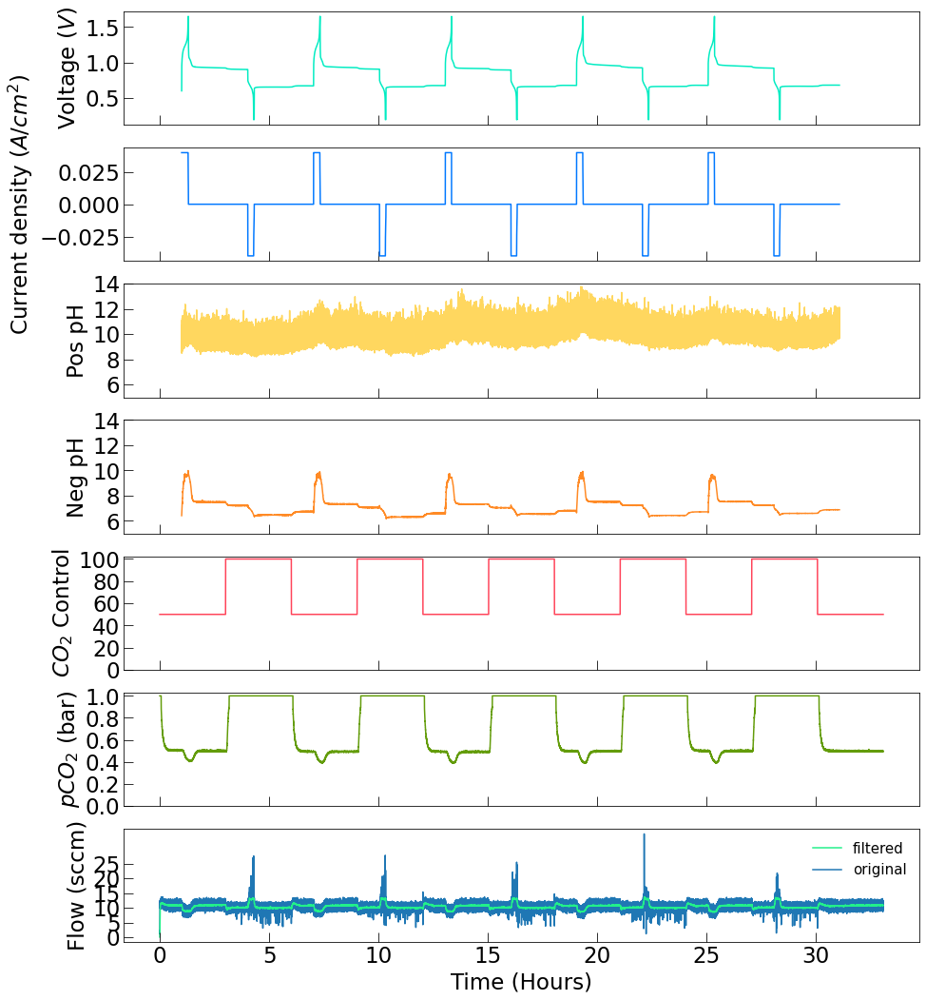
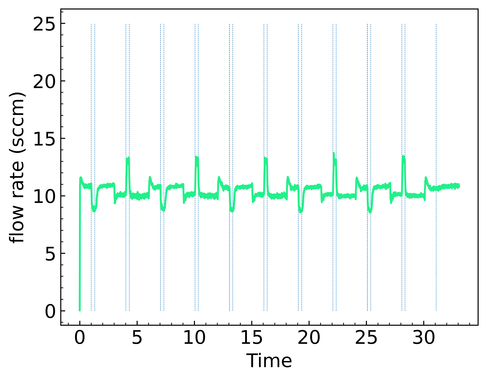
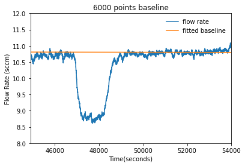
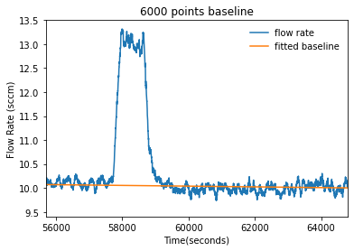
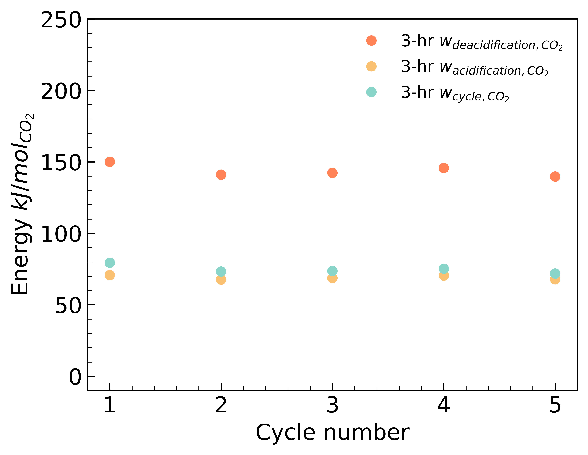
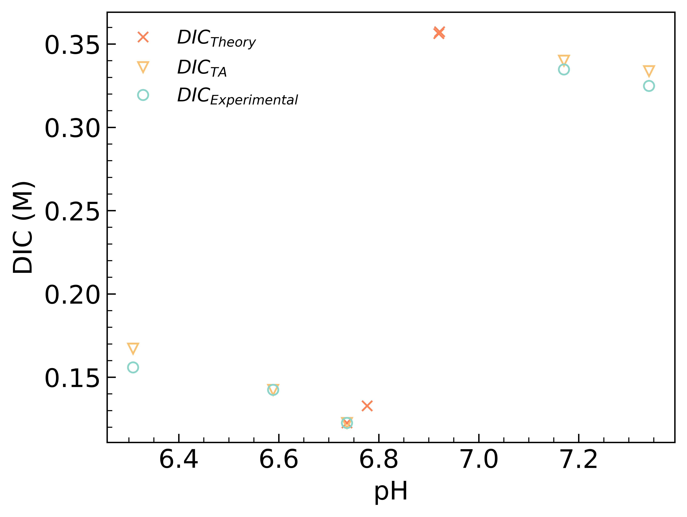

Tutorial¶
0.Import packages¶
0.0 Import common python packges¶
[1]:
### INTRODUCTION ###
### AUTHOR: Martin Jin ###
### Date: 20210127 ###
#A Method to summarize electrochemistry, CO2 and flow meter data.
#enter folder/file path to start
#for 20210107 data
import pandas as pd
import numpy as np
import matplotlib.pyplot as plt
import datetime
import csv
import sys
import glob
from matplotlib.ticker import MultipleLocator
from scipy.fft import fft,ifft
import pickle
from scipy.signal import lfilter,savgol_filter
from scipy.optimize import fsolve,root_scalar,ridder,anderson,newton_krylov
#set minor ticks
ml = MultipleLocator(5)
#A Method to summarize electrochemistry, CO2 and flow meter data.
0.1 Import packages from co2_project_methods¶
[2]:
import sys
# insert at 1, 0 is the script path (or '' in REPL)
sys.path.insert(1, '../../')
#import all custom function modules
import echem_methods
import gas_methods
import utils
import calc_dic
import plotting
1.Data¶
1.0 Import Echem Data¶
[3]:
#Import and Process Echem Data
electrochem_path_40mA = 'Electrochemistry/20210211 3hr_switch 40mAcm2 right CO2 test/'
echem_40_ma_dict = echem_methods.create_echem_dfs(electrochem_path_40mA,co2=True,cycle_number=5,outgas_time=163)
echem_40_ma_energy_df = echem_40_ma_dict['energy_df']
echem_40_df = echem_40_ma_dict['echem_df']
time_40_df = echem_40_ma_dict['time_df']
[4]:
echem_40_df.head()
[4]:
| Time | Voltage | Current | pH_left | pH_right | fitted_pH_left | fitted_pH_right | Delta_T_s | Time_Delta | Hours | |
|---|---|---|---|---|---|---|---|---|---|---|
| 0 | 2021-02-11 16:19:36 | 0.603859 | 0.199853 | 8.897782 | 6.418614 | 9.215425 | 6.321130 | 1.0 | 0.000000 | 0.000000 |
| 1 | 2021-02-11 16:19:37 | 0.726290 | 0.199854 | 9.859904 | 6.428022 | 9.221637 | 6.335298 | 2.0 | 0.000278 | 0.000278 |
| 2 | 2021-02-11 16:19:38 | 0.797950 | 0.199854 | 9.248463 | 6.428972 | 9.227791 | 6.349404 | 3.0 | 0.000556 | 0.000556 |
| 3 | 2021-02-11 16:19:39 | 0.837222 | 0.199854 | 9.010238 | 6.430870 | 9.233886 | 6.363450 | 4.0 | 0.000833 | 0.000833 |
| 4 | 2021-02-11 16:19:40 | 0.861303 | 0.199854 | 9.240014 | 6.439076 | 9.239923 | 6.377435 | 5.0 | 0.001111 | 0.001111 |
1.1 Import Gas Data¶
[5]:
#Import and Process Gas Data
gas_df=pd.read_csv("CO2Flow/20210211_Full_cell_right_CO2_3hr_switch_cycling_left_peristaltic_pump_additional_390mgDSPZ.txt",header=0)
gas_df['Datetime']=(gas_df['date']+gas_df['time']).astype(echem_40_df['Time'].dtype)
[6]:
gas_df.head()
[6]:
| date | time | loop_num | N2 input left(abs val) | N2 input right(abs val) | CO2 input left(abs val) | CO2 input right(abs val) | flow sensor left(sccm) | flow sensor right(sccm) | CO2 sensor left(abs val) | CO2 sensor right(abs val) | Datetime | |
|---|---|---|---|---|---|---|---|---|---|---|---|---|
| 0 | 02/11/2021 | 15:19:35 | 0 | 100 | 50 | 0 | 50 | 19.54 | 2.90 | 6.0 | 556.0 | 2021-02-11 15:19:35 |
| 1 | 02/11/2021 | 15:19:36 | 0 | 100 | 50 | 0 | 50 | 19.42 | 2.54 | 7.0 | 552.0 | 2021-02-11 15:19:36 |
| 2 | 02/11/2021 | 15:19:37 | 0 | 100 | 50 | 0 | 50 | 15.38 | 3.27 | 8.0 | 553.0 | 2021-02-11 15:19:37 |
| 3 | 02/11/2021 | 15:19:38 | 0 | 100 | 50 | 0 | 50 | 28.71 | 1.56 | 9.0 | 547.0 | 2021-02-11 15:19:38 |
| 4 | 02/11/2021 | 15:19:39 | 0 | 100 | 50 | 0 | 50 | 20.64 | 2.90 | 5.0 | 546.0 | 2021-02-11 15:19:39 |
1.2 Combine Data¶
[7]:
#Combine Data
total_df = utils.merge_echem_gas_df(echem_40_df,gas_df,co2_fit_path = '20210103_right_CO2_sensor_cubic_spline_fit')
change_gas_df = gas_methods.find_gas_change_time(gas_df,gas_switch_period=10800)
[8]:
total_df.head()
[8]:
| date | time | loop_num | N2 input left(abs val) | N2 input right(abs val) | CO2 input left(abs val) | CO2 input right(abs val) | flow sensor left(sccm) | flow sensor right(sccm) | CO2 sensor left(abs val) | ... | Current | pH_left | pH_right | fitted_pH_left | fitted_pH_right | Delta_T_s | Hours | right_pco2 | Corrected_Flow_Right | Corrected_Flow_Right_filtered | |
|---|---|---|---|---|---|---|---|---|---|---|---|---|---|---|---|---|---|---|---|---|---|
| 0 | 02/11/2021 | 15:19:35 | 0.0 | 100.0 | 50.0 | 0.0 | 50.0 | 19.54 | 2.90 | 6.0 | ... | NaN | NaN | NaN | NaN | NaN | NaN | NaN | 1.0 | 1.98650 | 0.036107 |
| 1 | 02/11/2021 | 15:19:36 | 0.0 | 100.0 | 50.0 | 0.0 | 50.0 | 19.42 | 2.54 | 7.0 | ... | NaN | NaN | NaN | NaN | NaN | NaN | NaN | 1.0 | 1.73990 | 0.067464 |
| 2 | 02/11/2021 | 15:19:37 | 0.0 | 100.0 | 50.0 | 0.0 | 50.0 | 15.38 | 3.27 | 8.0 | ... | NaN | NaN | NaN | NaN | NaN | NaN | NaN | 1.0 | 2.23995 | 0.107589 |
| 3 | 02/11/2021 | 15:19:38 | 0.0 | 100.0 | 50.0 | 0.0 | 50.0 | 28.71 | 1.56 | 9.0 | ... | NaN | NaN | NaN | NaN | NaN | NaN | NaN | 1.0 | 1.06860 | 0.126353 |
| 4 | 02/11/2021 | 15:19:39 | 0.0 | 100.0 | 50.0 | 0.0 | 50.0 | 20.64 | 2.90 | 5.0 | ... | NaN | NaN | NaN | NaN | NaN | NaN | NaN | 1.0 | 1.98650 | 0.161384 |
5 rows × 25 columns
[9]:
change_gas_df
[9]:
| Cycle | low_to_high | high_to_low | |
|---|---|---|---|
| 0 | 1 | 2021-02-11 18:20:02 | 2021-02-11 21:20:28 |
| 1 | 2 | 2021-02-12 00:20:55 | 2021-02-12 03:21:22 |
| 2 | 3 | 2021-02-12 06:21:48 | 2021-02-12 09:22:15 |
| 3 | 4 | 2021-02-12 12:22:41 | 2021-02-12 15:23:08 |
| 4 | 5 | 2021-02-12 18:23:34 | 2021-02-12 21:24:01 |
| 5 | 6 | 2021-02-13 00:24:27 | NaT |
2.Calculation¶
2.0 Calculate amount of CO2 captured and released for each cycle¶
[10]:
amount_3000Baseline_df = gas_methods.calculate_amount(total_df,time_40_df,change_gas_df,capture_parameter = 'Corrected_Flow_Right',baseline_range=3000)
[11]:
amount_3000Baseline_df
[11]:
| Cycle_Number | Capture_Amount | Outgas_Amount | Average_Amount | c0 | c1 | o0 | o1 | c_start | c_end | o_start | o_end | |
|---|---|---|---|---|---|---|---|---|---|---|---|---|
| 0 | 1 | -59.360046 | 45.428678 | 52.394362 | 0.003741 | 10.889300 | -0.025314 | 10.154904 | 3591 | 10802 | 14451 | 21604 |
| 1 | 2 | -53.423953 | 47.242824 | 50.333389 | 0.015037 | 10.713154 | -0.052972 | 10.612816 | 25262 | 32406 | 36095 | 43208 |
| 2 | 3 | -50.176936 | 45.080388 | 47.628662 | -0.004292 | 10.861044 | -0.027326 | 10.494254 | 46900 | 54009 | 57686 | 64811 |
| 3 | 4 | -50.915158 | 45.390502 | 48.152830 | 0.013501 | 10.507792 | -0.045379 | 11.072978 | 68459 | 75612 | 79291 | 86414 |
| 4 | 5 | -51.009255 | 45.919220 | 48.464237 | 0.026548 | 10.114267 | -0.039299 | 11.186749 | 90083 | 97215 | 100879 | 108017 |
2.1 Calculate DIC according to total_df, ehcem_time_df and change_gas_df¶
[12]:
dic_df = calc_dic.calc_DIC(total_df,time_40_df,change_gas_df)
[13]:
dic_df
[13]:
| Cycle | State | pH_measured | pH_theory | TA | DIC_TA | DIC_eq | DIC_theory | index | |
|---|---|---|---|---|---|---|---|---|---|
| 0 | 1 | 3'i | 6.418614 | 6.418614 | 0.050580 | 0.068026 | 0.068026 | 0.068026 | 3592 |
| 1 | 1 | 1 | 7.505919 | 6.851640608245976 | 0.275185 | 0.279265 | 1.285404 | 0.309388 | 10802 |
| 2 | 1 | 1' | 7.245702 | 6.851308386628657 | 0.274973 | 0.287011 | 0.717789 | 0.309177 | 14451 |
| 3 | 1 | 3 | 6.462063 | 6.5362073280691195 | 0.066353 | 0.087041 | 0.073348 | 0.083760 | 21604 |
| 4 | 1 | 3'f | 6.733489 | 6.536193931393215 | 0.066351 | 0.077297 | 0.121944 | 0.083758 | 25239 |
| 5 | 2 | 3'i | 6.736348 | 6.736348 | 0.105370 | 0.122635 | 0.122635 | 0.122635 | 25263 |
| 6 | 2 | 1 | 7.340558 | 6.92140707111922 | 0.323466 | 0.333799 | 0.885945 | 0.357367 | 32406 |
| 7 | 2 | 1' | 7.170335 | 6.9200101427109 | 0.322421 | 0.340051 | 0.608355 | 0.356329 | 36095 |
| 8 | 2 | 3 | 6.308327 | 6.776578093885727 | 0.115646 | 0.167154 | 0.056685 | 0.132864 | 43208 |
| 9 | 2 | 3'f | 6.588679 | 6.776558678328582 | 0.115640 | 0.142474 | 0.092283 | 0.132859 | 46878 |
| 10 | 3 | 3'i | 6.830009 | 6.830009 | 0.130870 | 0.148009 | 0.148009 | 0.148009 | 46901 |
| 11 | 3 | 1 | 7.334442 | 6.94558949189575 | 0.342122 | 0.353293 | 0.873941 | 0.375893 | 54009 |
| 12 | 3 | 1' | 7.187547 | 6.943221808801877 | 0.340249 | 0.357961 | 0.631680 | 0.374033 | 57686 |
| 13 | 3 | 3 | 6.539820 | 6.861440344237209 | 0.140751 | 0.177365 | 0.084314 | 0.157834 | 64811 |
| 14 | 3 | 3'f | 6.808290 | 6.861437506024068 | 0.140746 | 0.160168 | 0.141626 | 0.157833 | 68437 |
| 15 | 4 | 3'i | 6.791529 | 6.791529 | 0.119718 | 0.136915 | 0.136915 | 0.136915 | 68460 |
| 16 | 4 | 1 | 7.513157 | 6.936743360666748 | 0.335175 | 0.339917 | 1.306696 | 0.368996 | 75612 |
| 17 | 4 | 1' | 7.209551 | 6.933257466378527 | 0.332477 | 0.348709 | 0.662896 | 0.366316 | 79291 |
| 18 | 4 | 3 | 6.433915 | 6.8254765579792815 | 0.129500 | 0.172607 | 0.069839 | 0.146651 | 86414 |
| 19 | 4 | 3'f | 6.725550 | 6.825448874729407 | 0.129496 | 0.151266 | 0.120048 | 0.146643 | 90061 |
| 20 | 5 | 3'i | 6.845143 | 6.845143 | 0.135538 | 0.152651 | 0.152651 | 0.152651 | 90084 |
| 21 | 5 | 1 | 7.520362 | 6.94969192540814 | 0.345393 | 0.350047 | 1.328256 | 0.379140 | 97215 |
| 22 | 5 | 1' | 7.096323 | 6.94526179694325 | 0.341862 | 0.364774 | 0.518059 | 0.375635 | 100879 |
| 23 | 5 | 3 | 6.597446 | 6.873951332533366 | 0.144890 | 0.177829 | 0.093810 | 0.161948 | 108017 |
| 24 | 5 | 3'f | 6.885565 | 6.87393240411574 | 0.144884 | 0.161465 | 0.165875 | 0.161942 | 111625 |
3.Plotting¶
3.0 Plot all gas and echem data¶
[14]:
size=23
fig,ax = plt.subplots(7,1,figsize =(15,18),sharex=True,gridspec_kw={'hspace': 0.2})
#ax[0].set_xlabel("Date Time (Day Hour:Minute)",fontsize = 25)
ax[0].plot(total_df.Time_Delta,total_df.Voltage,color='#00ECC2')
ax[0].set_ylabel("",fontsize = size)
#ax[0].set_xlim(starting_time-delta,ending_time-delta)
ax[0].tick_params(axis='x', rotation=45)
ax[0].xaxis.set_tick_params(labelsize=size)
ax[0].yaxis.set_tick_params(labelsize=size)
#ax[0].set_ylim(-10,110)
#ax[0].set_xlabel("Time (Time)",fontsize = 25)
ax[0].set_ylabel("Voltage ($V$)",fontsize = size)
ax[0].tick_params(axis='x',which='minor',direction='in',length=6)
ax[0].tick_params(axis='x',which='major',direction='in',length=10)
ax[0].tick_params(axis='y',which='minor',direction='in',length=6)
ax[0].tick_params(axis='y',which='major',direction='in',length=10)
ax[1].plot(total_df.Time_Delta,total_df.Current/5,color="#0078FF")
ax[1].set_ylabel("",fontsize = size)
#ax[1].set_xlim(starting_time-delta,ending_time-delta)
ax[1].tick_params(axis='x', rotation=45)
ax[1].xaxis.set_tick_params(labelsize=size)
ax[1].yaxis.set_tick_params(labelsize=size)
#ax[0].set_ylim(-10,110)
#ax[1].set_xlabel("Time (Time)",fontsize = 25)
ax[1].set_ylabel("Current density ($A/cm^{2}$)",fontsize = size)
ax[1].tick_params(axis='x',which='minor',direction='in',length=6)
ax[1].tick_params(axis='x',which='major',direction='in',length=10)
ax[1].tick_params(axis='y',which='minor',direction='in',length=6)
ax[1].tick_params(axis='y',which='major',direction='in',length=10)
ax[2].plot(total_df.Time_Delta,total_df.pH_left,color='#FFD75F')
ax[2].set_ylabel("",fontsize = size)
#ax[2].set_xlim(starting_time-delta,ending_time-delta)
ax[2].tick_params(axis='x', rotation=45)
ax[2].xaxis.set_tick_params(labelsize=size)
ax[2].yaxis.set_tick_params(labelsize=size)
ax[2].set_ylim(5,14)
#ax[2].set_xlabel("Time(Time)",fontsize = 25)
ax[2].set_ylabel("Pos pH",fontsize = size)
ax[2].tick_params(axis='y',direction='in')
ax[2].tick_params(axis='x',which='both',direction='in')
ax[2].set_yticks([6,8,10,12,14])
ax[2].tick_params(axis='x',which='minor',direction='in',length=6)
ax[2].tick_params(axis='x',which='major',direction='in',length=10)
ax[2].tick_params(axis='y',which='minor',direction='in',length=6)
ax[2].tick_params(axis='y',which='major',direction='in',length=10)
ax[3].plot(total_df.Time_Delta,total_df.pH_right,color='#FF8A25')
ax[3].set_ylabel("",fontsize = size)
#ax[3].tick_params(axis='x', rotation=45)
ax[3].xaxis.set_tick_params(labelsize=size)
ax[3].yaxis.set_tick_params(labelsize=size)
ax[3].set_ylim(5,14)
ax[3].set_ylabel("Neg pH",fontsize = size)
ax[3].tick_params(axis='y',direction='in')
ax[3].tick_params(axis='x',which='both',direction='in')
ax[3].set_yticks([6,8,10,12,14])
ax[3].tick_params(axis='x',which='minor',direction='in',length=6)
ax[3].tick_params(axis='x',which='major',direction='in',length=10)
ax[3].tick_params(axis='y',which='minor',direction='in',length=6)
ax[3].tick_params(axis='y',which='major',direction='in',length=10)
ax[4].plot(total_df.Time_Delta,total_df['CO2 input right(abs val)'],color='#FF4359')
#ax[3].tick_params(axis='x', rotation=45)
ax[4].xaxis.set_tick_params(labelsize=size)
ax[4].yaxis.set_tick_params(labelsize=size)
ax[4].set_ylabel("$CO_2$ Control",fontsize = size)
ax[4].tick_params(axis='y',direction='in')
ax[4].set_yticks([0,20,40,60,80,100])
ax[4].tick_params(axis='x',which='both',direction='in')
ax[4].tick_params(axis='x',which='minor',direction='in',length=6)
ax[4].tick_params(axis='x',which='major',direction='in',length=10)
ax[4].tick_params(axis='y',which='minor',direction='in',length=6)
ax[4].tick_params(axis='y',which='major',direction='in',length=10)
ax[5].plot(total_df.Time_Delta,total_df['right_pco2'],color='#639C0A')
#ax[3].tick_params(axis='x', rotation=45)
ax[5].xaxis.set_tick_params(labelsize=size)
ax[5].yaxis.set_tick_params(labelsize=size)
ax[5].set_ylabel("$pCO_2$ (bar)",fontsize = size)
ax[5].tick_params(axis='y',direction='in')
ax[5].set_yticks([0,0.2,0.4,0.6,0.8,1.0])
ax[5].tick_params(axis='x',which='both',direction='in')
ax[5].tick_params(axis='x',which='minor',direction='in',length=6)
ax[5].tick_params(axis='x',which='major',direction='in',length=10)
ax[5].tick_params(axis='y',which='minor',direction='in',length=6)
ax[5].tick_params(axis='y',which='major',direction='in',length=10)
n = 80 # the larger n is, the smoother curve will be
b = [1.0 / n] * n
a = 1
#filtered_right = lfilter(b,a,total_df['flow sensor right(sccm)'])
#total_df['right_pco2'] = total_df['right_pco2'].apply(lambda x: np.where(x>0.9,1,x))
ax[6].plot(total_df.Time_Delta,total_df.Corrected_Flow_Right_filtered,color='#22F08A',zorder=1,label='filtered')
ax[6].plot(total_df.Time_Delta,total_df.Corrected_Flow_Right,zorder=0,label='original')
#ax[6].tick_params(axis='x', rotation=45)
ax[6].xaxis.set_tick_params(labelsize=size)
ax[6].yaxis.set_tick_params(labelsize=size)
ax[6].set_ylabel("Flow (sccm)",fontsize = size)
ax[6].tick_params(axis='y',direction='in')
ax[6].set_yticks([0,5,10,15,20,25])
ax[6].legend(frameon=False,fontsize=15)
ax[6].tick_params(axis='x',which='both',direction='in')
ax[6].tick_params(axis='x',which='minor',direction='in',length=6)
ax[6].tick_params(axis='x',which='major',direction='in',length=10)
ax[6].tick_params(axis='y',which='minor',direction='in',length=6)
ax[6].tick_params(axis='y',which='major',direction='in',length=10)
plt.xlabel('Time (Hours)',fontsize=size)
[14]:
Text(0.5, 0, 'Time (Hours)')

3.1 plot each echem process’ start and end time¶
[15]:
ml = MultipleLocator(5)
plt.figure(figsize=(5.941,4.630),dpi=800,edgecolor='black')
plt.plot(total_df.Time_Delta,total_df['Corrected_Flow_Right_filtered'],color='#22F08A')
for column in time_40_df.columns:
if column != 'Cycle':
plt.vlines((time_40_df[column]-total_df.Datetime.iloc[0]).apply(lambda x: x.days*24+x.seconds/3600),ymin=0,ymax=25,linestyles='dashed',linewidth=0.3)
plt.xlabel('Time',fontsize = 15)
plt.xticks(fontsize = 15)
plt.yticks(fontsize = 15)
#plt.ylim(-2,3)
#plt.xlim(0,12)
plt.legend(loc=2,frameon=False,fontsize=12)
plt.ylabel('flow rate (sccm)',fontsize = 15)
plt.tick_params(axis='both',which='both',direction='in')
plt.minorticks_on()
plt.tick_params(axis='x')
plt.show()
No handles with labels found to put in legend.

3.2 Plot Baseline for CO2 capture/release¶
3.2.0 Capture¶
[16]:
plotting.plot_baseline(amount_3000Baseline_df,total_df = total_df,cycle=2,capture=True,baseline_range=2000,title='6000 points baseline',ymin=8,ymax=12)

3.2.1 Release¶
[17]:
plotting.plot_baseline(amount_3000Baseline_df,total_df = total_df,cycle=2,capture=False,baseline_range=2000,title='6000 points baseline')

3.3 Plot Energy Cost¶
[18]:
energy_co2_40ma_df = echem_40_ma_energy_df.merge(amount_3000Baseline_df)
energy_co2_40ma_df['deacidification_work(kJ/molCO2)'] = -energy_co2_40ma_df['Charge_Energy']/1000/(energy_co2_40ma_df['Capture_Amount']/24.01/1000)
energy_co2_40ma_df['acidification_work(kJ/molCO2)'] = -energy_co2_40ma_df['Discharge_Energy']/1000/(energy_co2_40ma_df['Outgas_Amount']/24.01/1000)
energy_co2_40ma_df['cycle_work(kJ/molCO2)'] = energy_co2_40ma_df['deacidification_work(kJ/molCO2)']-energy_co2_40ma_df['acidification_work(kJ/molCO2)']
energy_co2_40ma_df['co2_captured/electron'] = -(energy_co2_40ma_df['Capture_Amount']/24.01/1000)/(energy_co2_40ma_df['Charge_Capacity']/96485)
energy_co2_40ma_df['co2_released/electron'] = -(energy_co2_40ma_df['Outgas_Amount']/24.01/1000)/(energy_co2_40ma_df['Discharge_Capacity']/96485)
[19]:
fig,ax = plt.subplots(1,1,figsize=(5.941,4.630),dpi=800,edgecolor='black',sharex=True,gridspec_kw={'hspace': 0.2})
size=15
legend_size=11
#ax[0].set_xlabel("Date Time (Day Hour:Minute)",fontsize = 25)
ax.plot(energy_co2_40ma_df.index+1,np.abs(energy_co2_40ma_df['Charge_Energy']/(energy_co2_40ma_df['Outgas_Amount']*0.95/24.01)),'o',color='#FF8357',label='3-hr $ w_{deacidification, CO_2}$')
ax.plot(energy_co2_40ma_df.index+1,np.abs(energy_co2_40ma_df['Discharge_Energy']/(energy_co2_40ma_df['Outgas_Amount']*0.95/24.01)),'o',color='#FAC172',label='3-hr $ w_{acidification, CO_2}$')
ax.plot(energy_co2_40ma_df.index+1,np.abs((energy_co2_40ma_df['Discharge_Energy']+energy_co2_40ma_df['Charge_Energy'])/(energy_co2_40ma_df['Outgas_Amount']*0.95/24.01)),'o',color='#89D5C9',label ='3-hr $w_{cycle, CO_2}$')
#ax[0].set_xlim(starting_time-delta,ending_time-delta)
ax.tick_params(axis='x')
ax.xaxis.set_tick_params(labelsize=size)
ax.yaxis.set_tick_params(labelsize=size)
ax.set_ylim(-10,250)
#ax[0].set_xlabel("Time (hours)",fontsize = 25)
ax.set_ylabel("Energy $kJ/mol_{CO_2}$",fontsize = size)
#ax.set_xticks([0,5,10,15,20])
ax.tick_params(axis='x',which='minor',direction='in',length=3)
ax.tick_params(axis='x',which='major',direction='in',length=5)
ax.tick_params(axis='y',which='minor',direction='in',length=3)
ax.tick_params(axis='y',which='major',direction='in',length=5)
ax.set_xlabel("Cycle number",fontsize = size)
ax.legend(frameon=False,fontsize=legend_size)
plt.minorticks_on()

3.4 Plot DIC vs. pH¶
[20]:
#Choose a single cycle to plot DIC
cycle_2_dic = dic_df[dic_df['Cycle']==2]
exp_dic = np.array([cycle_2_dic.iloc[0]['DIC_TA'],
cycle_2_dic.iloc[0]['DIC_TA']+np.abs(energy_co2_40ma_df.iloc[1]['Capture_Amount']/24.01/1000/0.011),
(cycle_2_dic.iloc[0]['DIC_TA']+np.abs(energy_co2_40ma_df.iloc[1]['Capture_Amount']/24.01/1000/0.011))/0.33*0.34,
(cycle_2_dic.iloc[0]['DIC_TA']+np.abs(energy_co2_40ma_df.iloc[1]['Capture_Amount']/24.01/1000/0.011))/0.33*0.34 - np.abs(energy_co2_40ma_df['Outgas_Amount'].iloc[1]/24.01/1000/0.011),
cycle_2_dic.iloc[4]['DIC_TA']
])
[21]:
fig,ax = plt.subplots(1,1,figsize=(5.941,4.630),dpi=800,edgecolor='black',sharex=True,gridspec_kw={'hspace': 0.2})
size=15
legend_size=11
#ax[0].set_xlabel("Date Time (Day Hour:Minute)",fontsize = 25)
ax.plot(cycle_2_dic['pH_theory'],cycle_2_dic['DIC_theory'],'x',color='#FF8357',label='$DIC_{Theory}$')
ax.plot(cycle_2_dic['pH_measured'],cycle_2_dic['DIC_TA'],'v',color='#FAC172',label='$DIC_{TA}$',markerfacecolor='none')
ax.plot(cycle_2_dic['pH_measured'],exp_dic,'o',color='#89D5C9',label='$DIC_{Experimental}$',markerfacecolor='none')
#ax[0].set_xlim(starting_time-delta,ending_time-delta)
ax.tick_params(axis='x')
ax.xaxis.set_tick_params(labelsize=size)
ax.yaxis.set_tick_params(labelsize=size)
#ax.set_ylim(-10,250)
#ax[0].set_xlabel("Time (hours)",fontsize = 25)
ax.set_ylabel("DIC (M)",fontsize = size)
#ax.set_xticks([0,5,10,15,20])
ax.tick_params(axis='x',which='minor',direction='in',length=3)
ax.tick_params(axis='x',which='major',direction='in',length=5)
ax.tick_params(axis='y',which='minor',direction='in',length=3)
ax.tick_params(axis='y',which='major',direction='in',length=5)
ax.set_xlabel("pH",fontsize = size)
ax.legend(frameon=False,fontsize=legend_size,ncol=1)
plt.minorticks_on()
